原文连接:https://www.cnblogs.com/blizzawang/p/11411670.html
最近几天发现有些人对Github网站很好奇，但是无奈自己不会用，因为是外国人的网站，首先自己的英文就不过关。对于这个，其实可以用谷歌浏览器去浏览Github，它有一键翻译的功能。但还是有必要介绍一下关于Github的一些功能和具体操作。
考虑到一些初学者可能没有学过git、svn等版本控制工具，所以，这里我尽量不去涉及git指令。有关git的使用和学习可以看看我的系列博客，版本管理·玩转git。
话不多说，进入正题。
Github账户注册
首先百度搜索Github，进入Github官网。
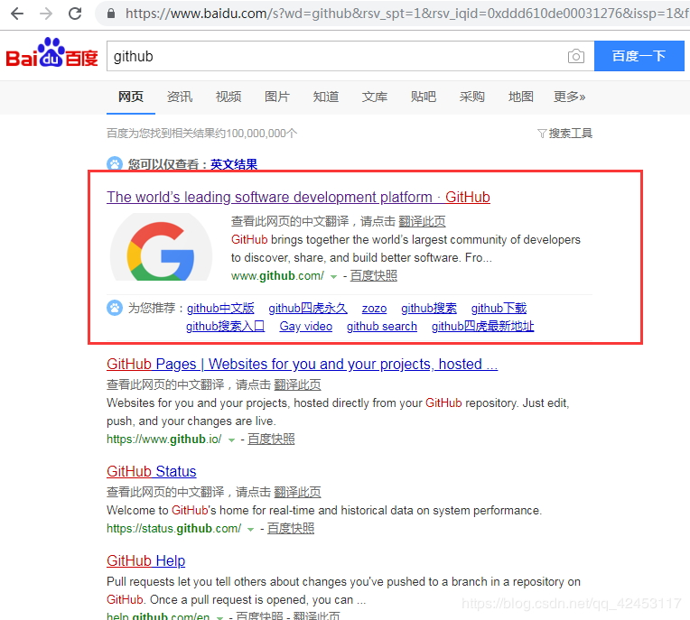
进入官网后，我们点击Sign up进行注册。
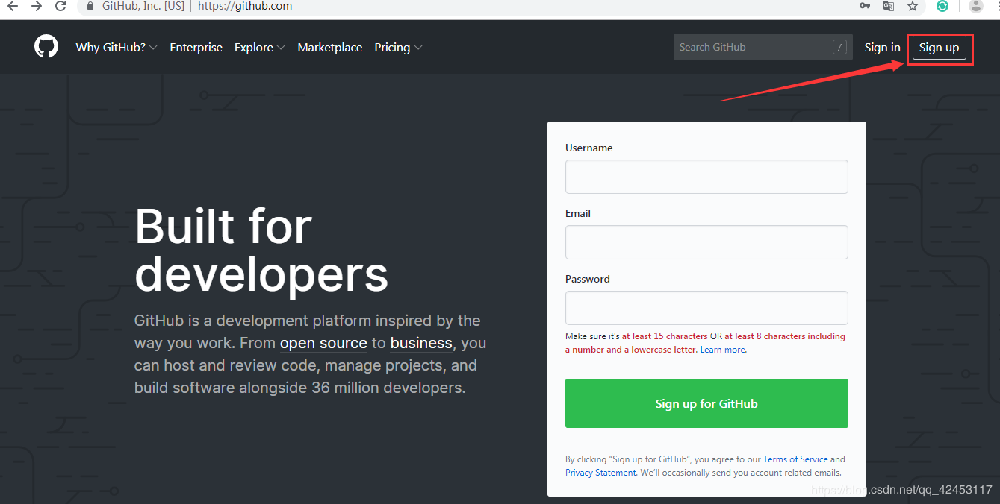
这一步没什么好说的，输入用户名和你的邮箱，密码然后进行一个账户测试，完成后点Create an account即可。

完成后来到第二步，这里当然是选择免费的订阅了。
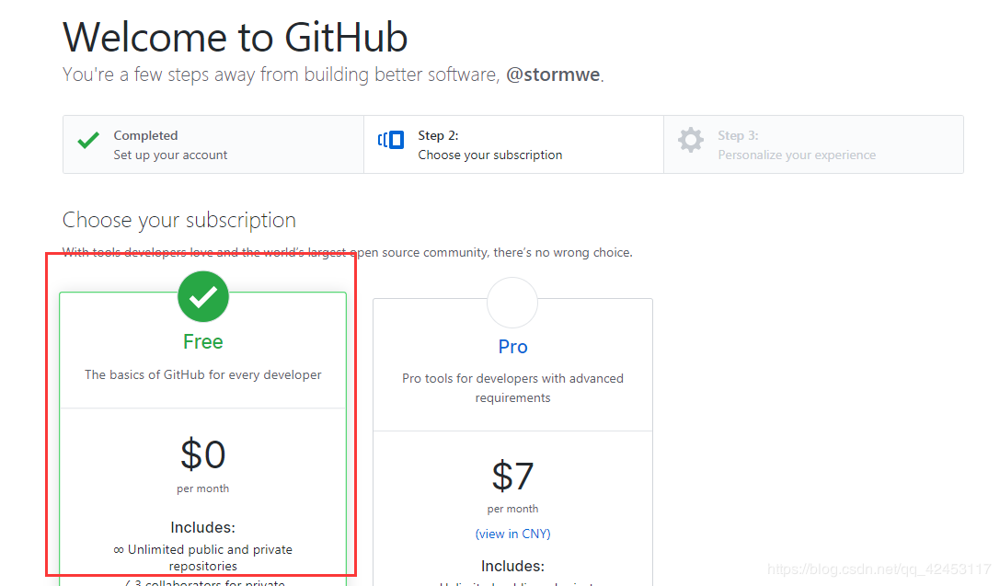
选择完成后点击Continue，来到第三步。
第三步只是提出一些问题让你回答，例如您的编程水平如何？您打算如何使用Github？等等。不想答可以划到网页底部选择跳过。
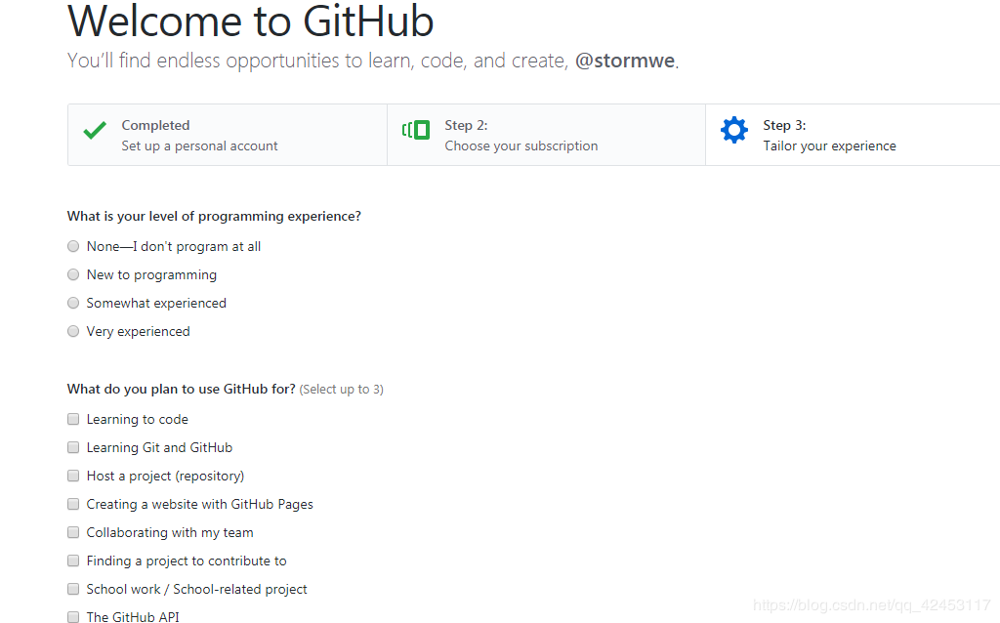
答完后点击Submit进行提交即可。
提交之后Github会向你的注册邮箱发送一封激活邮件，去把邮件打开然后点击里面的链接激活即可，这样账户就创建完成了。
资源搜索
我们用新创建的账户进行登录，登录成功后就会显示这个页面，我们可以在左上角进行资源的搜索，我这里以开源框架OkHttp举例，你可以选择范围，选择在自己的仓库搜索还是在整个Github网站上搜索。我这里因为自己的仓库里没有这个资源，所以它默认在整个网站搜索。
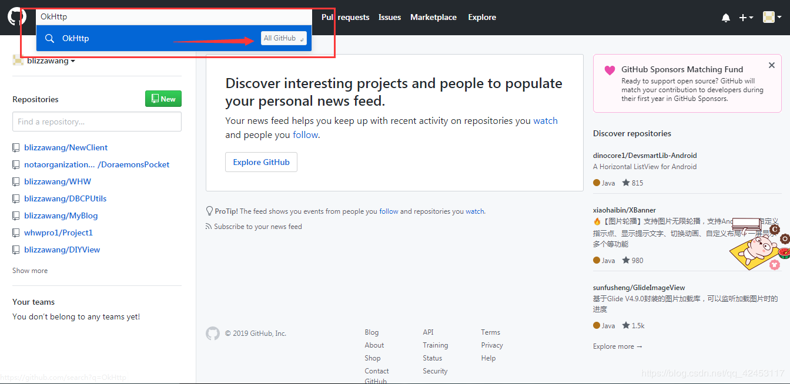
输入关键字后回车就会开始搜索，然后显示搜索结果。
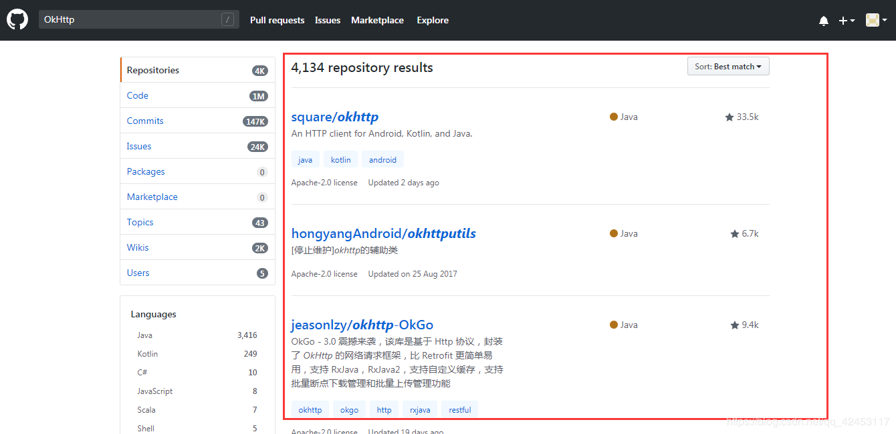
我们需要的资源就是排在第一位的这个，我们点击进入，即可看到整个项目结构及源码。通过这个绿色的按钮我们可以对资源进行下载。
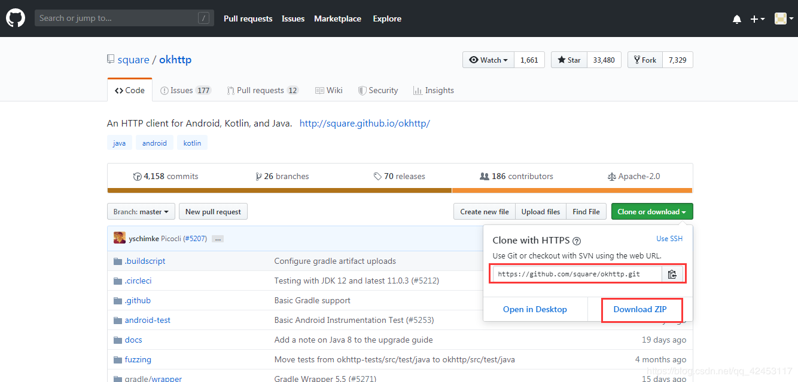
第一个红框是仓库地址，可以通过git工具进行克隆。这里我们就直接选择Download ZIP，资源就被下载下来了。
创建仓库
下面介绍一下如何创建属于自己的代码仓库。
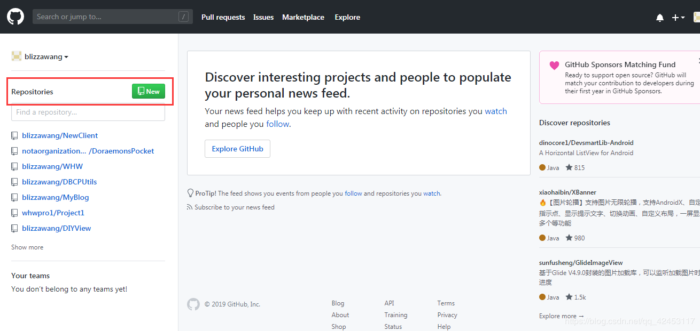
在网页的左侧就是你的代码仓库，你可以点击New进行创建。
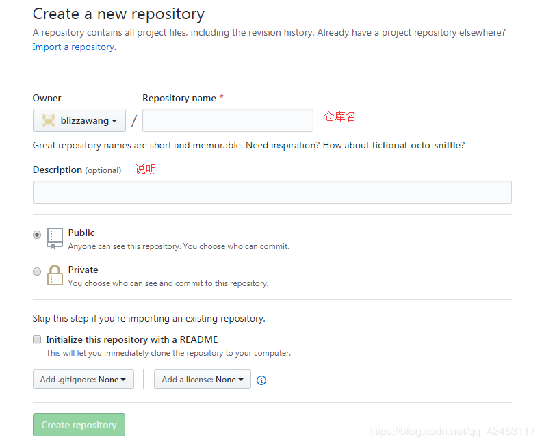
输入仓库名和仓库的描述或说明，然后点击Create repository。
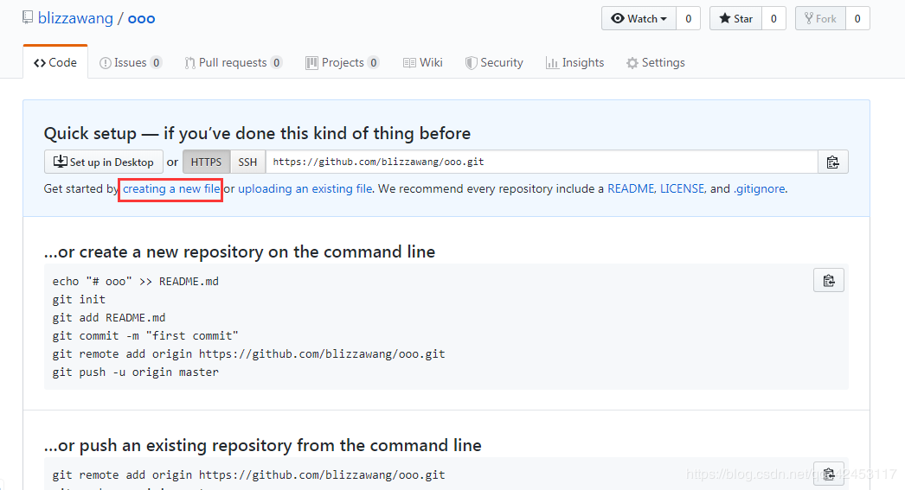
这样仓库就创建完成了，只不过现在的仓库是空的，还什么也没有，所以这里它推荐你从其它地方导入代码进来或者推送代码进来。我们可以点击creating a new file来创建新文件。
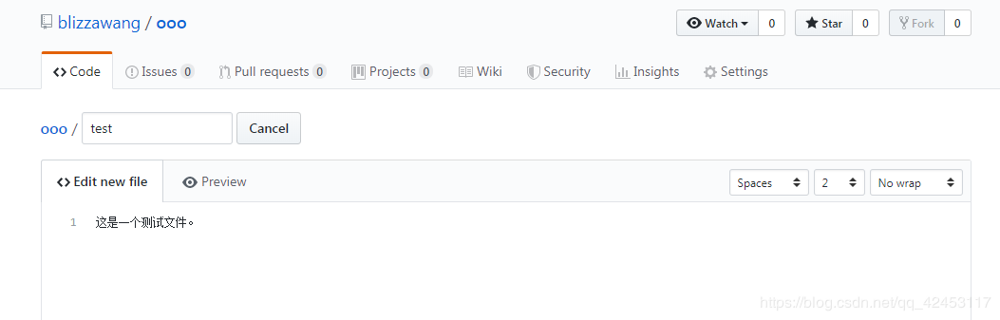
填上文件名，然后随意编写一些文件内容，完成后将网页拉至底部。
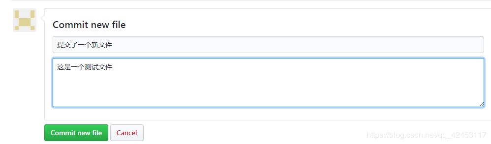
填写这次创建文件的说明，然后点Commit new file。
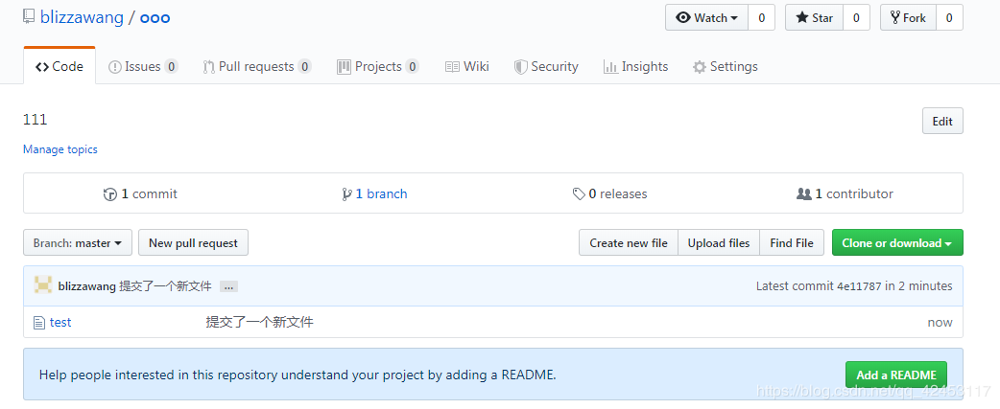
现在你的仓库里就有内容了。
团队协作
Github的优势就是让广大人民群众都可以参与到各种开源项目的编写。那么，如何在Github上实现团队协作呢？
通过前面的一些操作，我们已经创建了一个仓库，那么我们就以这个仓库为例，进行团队开发。首先你得在这个仓库中加入你的团队成员。
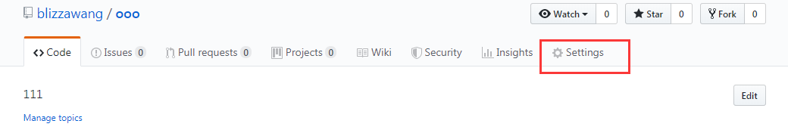
点击Settings，进入设置页面。
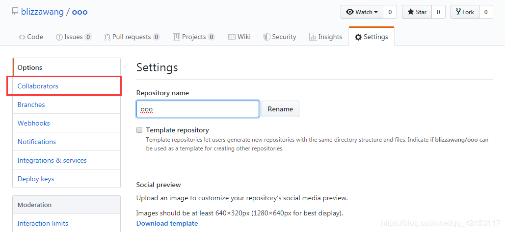
点击Collaborators，进入协作者页面。
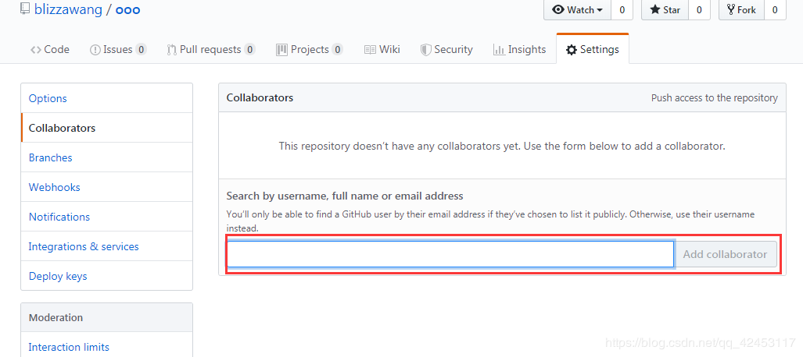
这里显示该仓库暂无协作者，那么我们可以通过下面的搜索框进行用户搜索，输入用户的用户名或者邮箱地址进行搜索，成功搜索到之后点击Add collaborator即可将该用户添加为这个仓库的协作者。这个时候该用户会收到一条通知，只有他同意了才会参与到这个仓库的开发中来。
我们还可以对团队中的成员进行权限的设置，以便更加高效地开发。
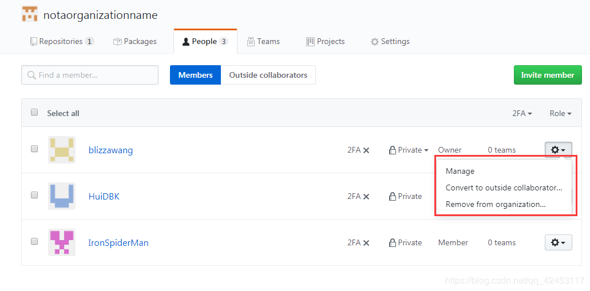
参与开源项目
如何去参与一个开源项目，比如人气极高的bootstrap，这是一个非常强大的CSS框架，我们在整个网站中搜索bootstrap，然后进入仓库主页。
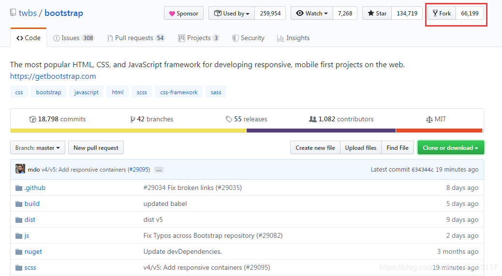
然后点Fork，就会在自己的账号下克隆一个bootstrap仓库。然后从自己的账号下克隆，这里就必须要使用git工具了，输入git指令：
git clone https://github.com/blizzawang/bootstrap.git注意一定要从自己的账号下clone仓库，这样你才能推送修改，如果从bootstrap作者的仓库地址克隆，因为没有权限，你将不能推送修改，除非作者将你列为该仓库的协作者，但显然这是不可能的。
Bootstrap的官方仓库twbs/bootstrap、你在GitHub上克隆的仓库my/bootstrap，以及你自己克隆到本地电脑的仓库，他们的关系就像下图显示的那样：
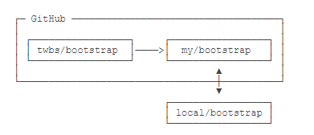
如果你想修复bootstrap的一个bug，或者新增一个功能，立刻就可以开始干活，干完后，往自己的仓库推送。
如果你希望bootstrap的官方库能接受你的修改，你就可以在GitHub上发起一个pull request。当然，对方是否接受你的pull request就不一定了。
如何合并代码
我们知道，git拥有极其强大的克隆和分支功能，在团队协作中，你自己作为团队项目的主干，其它成员就各自有一条分支，每个人都在自己的分支上工作，互不影响，这样能最高效地开发项目。当每个人的项目功能都完成后，就是合并代码的时候了，所有人的代码都合并完成并没有发生错误，整个项目就完成了。那么，在Github中，该如何合并代码呢？
还是以上面创建的仓库为例，这里我做了一些操作，使用git工具将仓库clone到了桌面上，我们叫它本地仓库，然后在本地仓库新建了一个分支，模拟第二个程序员进行的操作，第二个程序员创建了一个test2文件，然后通过git工具推送到了Github仓库里。
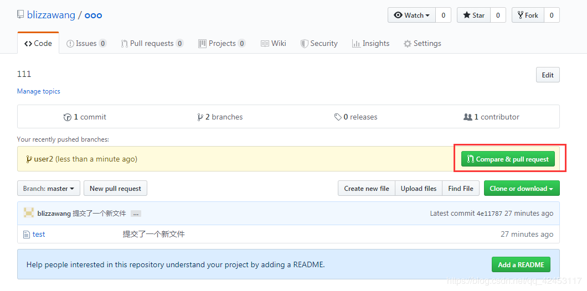
现在我们可以看到，它提示一分钟前user2分支有推送，然后我们点击Compare&pullrequest进行比较和拉取请求。
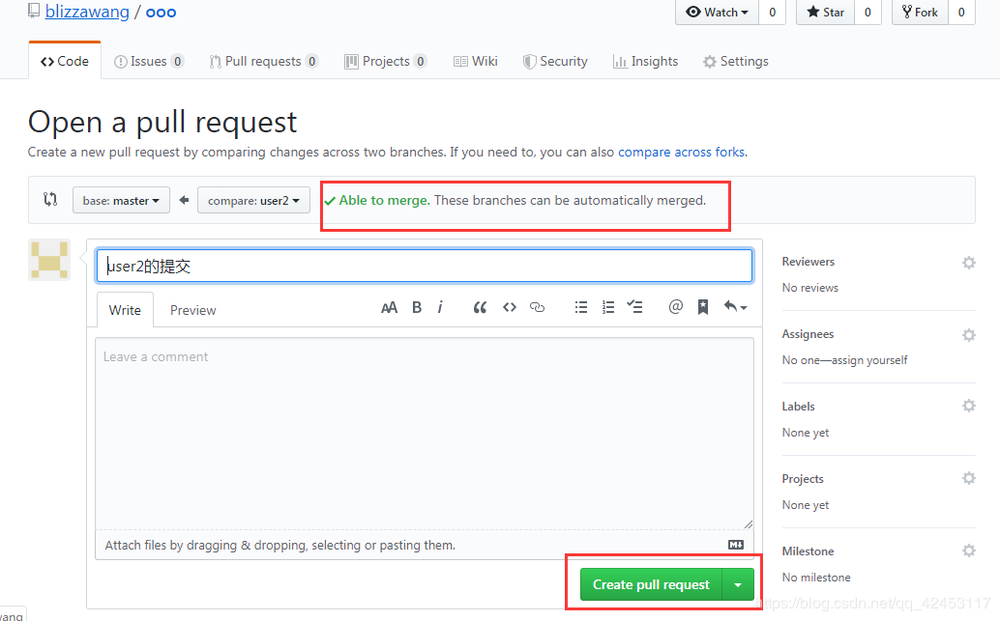
会发现，这些分支能够自动合并，是因为当前两个分支的内容互不冲突，这样我们可以在下面填写一些关于此次合并的说明，然后点击Create pull request进行合并。
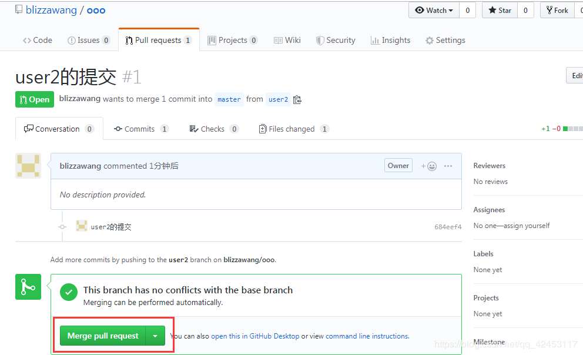
继续点击Merge pull request。
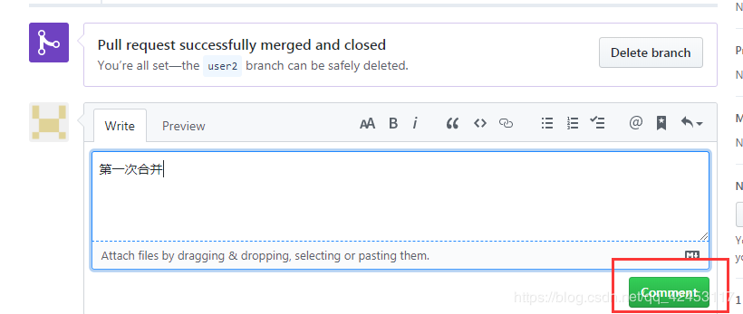
点击Commit进行提交。我们回到仓库主页，发现user2的文件成功进来了。
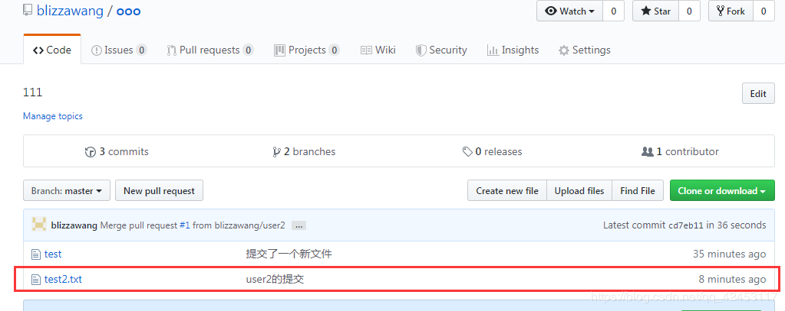
而当你的提交和其它人的提交产生了冲突，比如同时创建了一个变量，亦或是同时修改了某个文件的公共部分，此时就无法自动合并，这样，你得通过git工具将他人的代码更新到自己的本地仓库，然后在本地将冲突解决，再推送到Github，其他人再对自己的代码进行更新即可。
如何删除仓库
最后一点，如何删除创建的仓库？
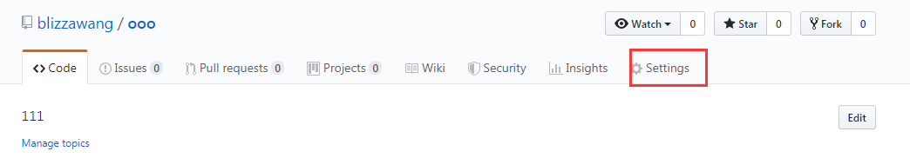
点击Settings进入设置页面。
将网页拉到底部，选择Delete this repository。
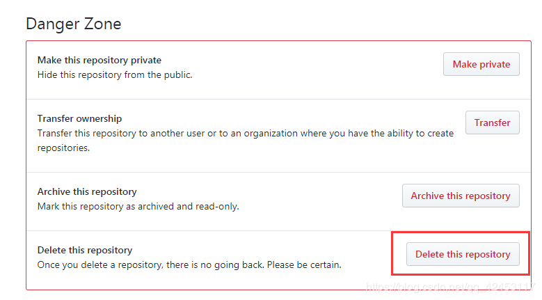
然后输入仓库的名称，点击按钮。
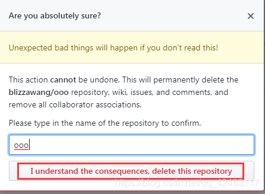
删除成功。
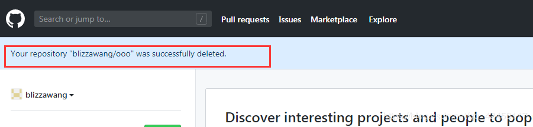
好了，关于Github网站的使用就介绍到这里。当然，里面涉及了一些git的知识，关于git，我想你想要使用Github，你就应该学会使用git。
因为这是国外的网站，所以有时候网站延迟会很高。也推荐大家一个网站。码云 Gitee - 云端软件开发协作平台。这是国内的一个代码托管服务网站，同样是通过git进行管理的，而且网速会快很多。